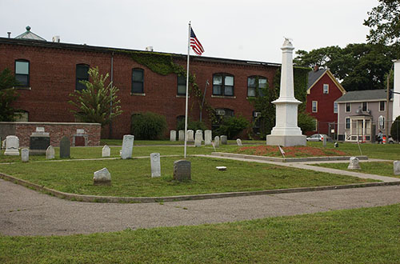

Community Service:
Volunteering for Historic Somerville
Not many people can say they are historical reenactors, and I’m guessing even fewer will note they are accidental historical reenactors. I volunteer for Historic Somerville, which is a small group of docents affiliated with the Somerville Museum in Union Square. We give tours to anyone interested in learning more about historic sites in the city. I got started thinking it would be super cool to educate myself about my local cemetery while providing a community service, and conveniently overlooked the fine print (*Victorian costume required* … with bustle). Nonetheless, volunteering rules and I even get to participate in city events with Somerville High School students, which is always fun! If you ever see a Victorian lady walking amongst the graves adjacent to Market Basket, don’t worry it’s not a ghost…it’s probably me.
And if you don't live in Somerville, you can still find out more about the Historic Milk Row Cemetery by reading this pamphlet (it's the same one we give out to the public during our tours). The Milk Row Cemetery has an awesome history behind it because the neighborhood has changed so much over the decades. The history of urban development in my neighborhood is a side-interest of mine, so check out my atlas obscura to read about how the paper industry shaped Somerville (or why there are so many repurposed warehouses in Union Square!). Back to Milk Row Cemetery, the site has also recently undergone extensive conservation (a project that's been in the works since 2002) and is a testament to the efficacy of the Somerville Historic Preservation Commission.